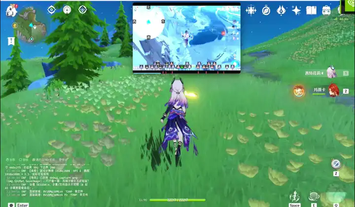
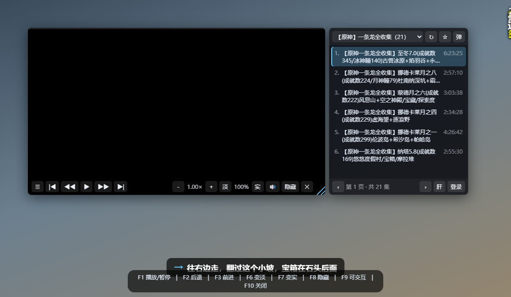

BetterGI JS 脚本 · 版本 1.6.29
把 B 站攻略视频浮在游戏画面上，边玩边看；播到「该你打怪了」的地方自动暂停。 鼠标默认穿透给游戏，按住 Alt 才临时接管。

边玩边看：视频浮在画面上，鼠标默认穿透给游戏。
下载最新版本
解压后把整个 VideoMask 文件夹放进 BetterGI 的脚本目录
main.js 必须正好在
VideoMask\ 这一层，不能是 VideoMask\VideoMask\main.js。

四级侧栏：地图 → 分类（宝箱 / 神瞳 / 主线…）→ 版本 → 分 P。